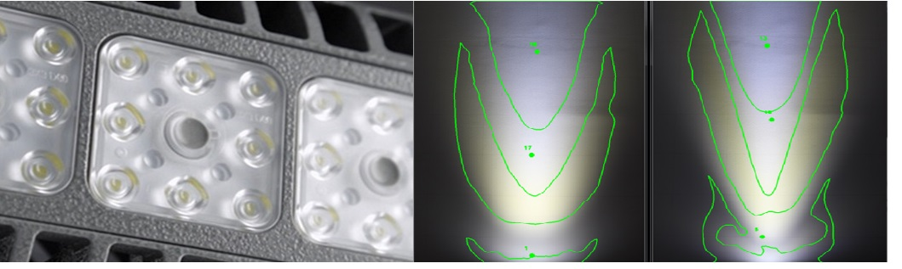
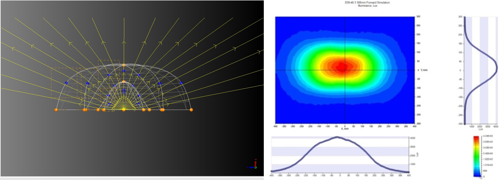
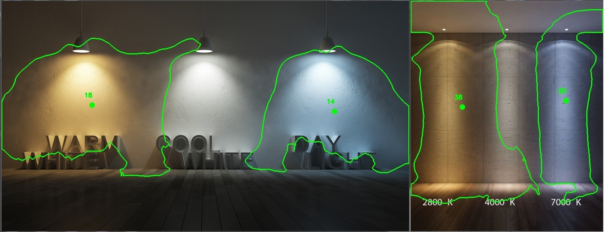
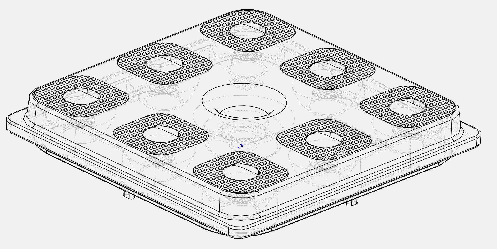
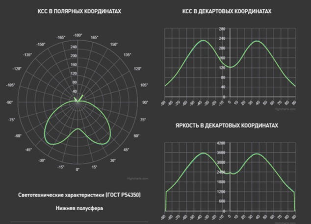
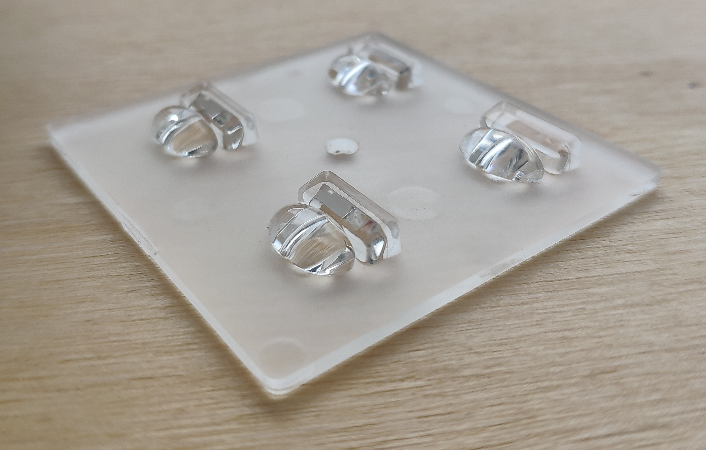
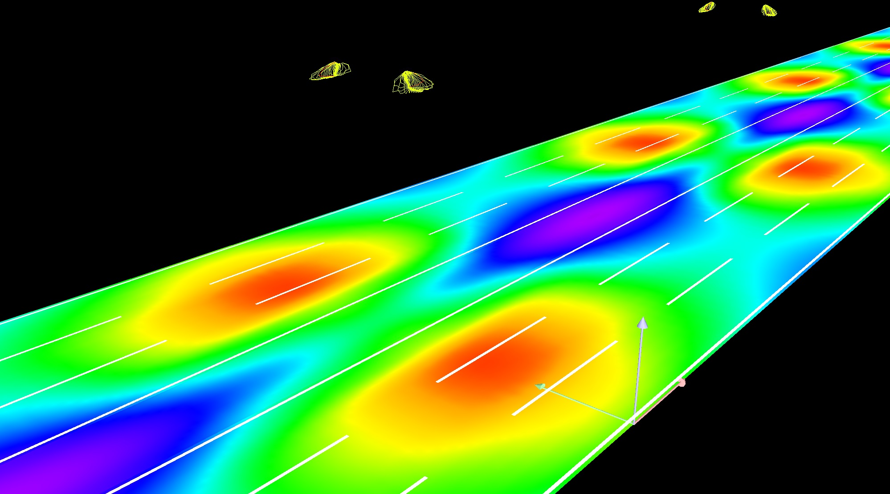

Have successfully started own optical components production to switch the company from buying to manufacturing them.
Result: around 1 million $ per year saved.
Have created software tools for image, CAD and photometry storage.
Have completed over 30 lighting fixture projects.


• Design of non-imaging optical systems
• LED source analysis and selection
• Illumination optics design (including colorimetry, fabrication tolerance and stray light analysis): dome/TIR/hybrid lenses, reflectors, diffusers/BEF, light guides and backlight;

• Developed image analysis tool and methodology for light-beam photos comparison. This program helps to compare many light beam photos simulateniously and by whole project team. The process of choosing the right visual effect is digitilized and much more objective.

• 10 years experince with Solidworks. Developed API macros for complex geometry calculations, automated drawing routine and merging with optical software.
• ISO 10110

• Provided luminaire`s LDT analysis tool on web-site (Russian version)
• Experience with photometric laboratory equipment

• Prototyping of optics and lighting fixtures
• Experience with optical and photometric laboratory equipment

• Implemented photometry file storage system and file converter to website database and ERP
• All routine meets CIE standard